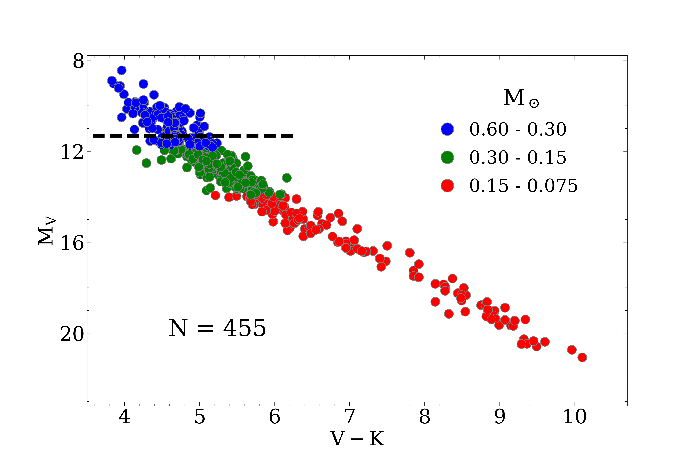
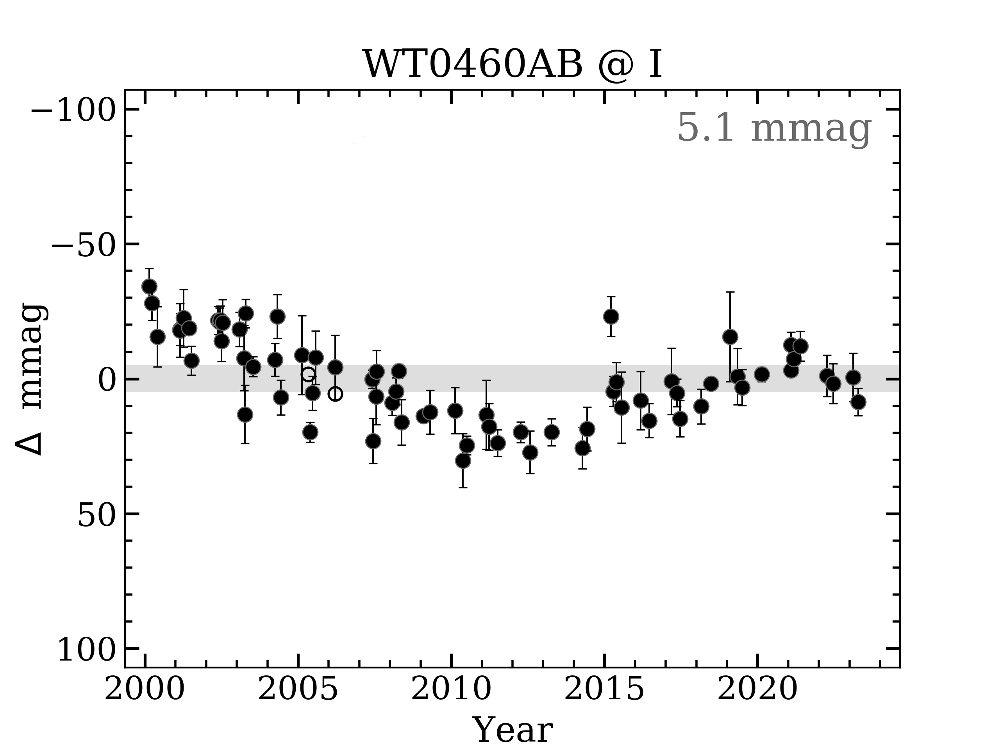
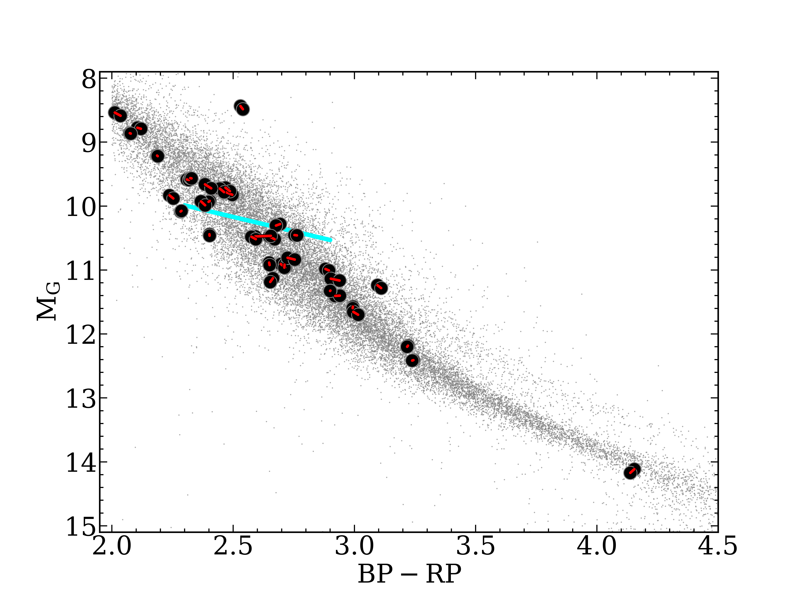
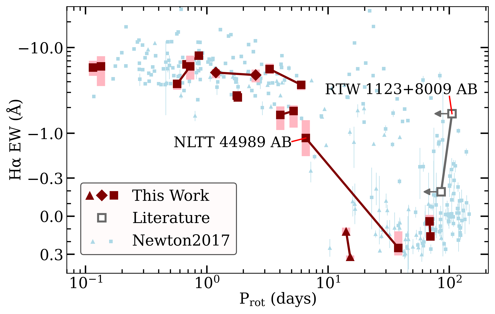
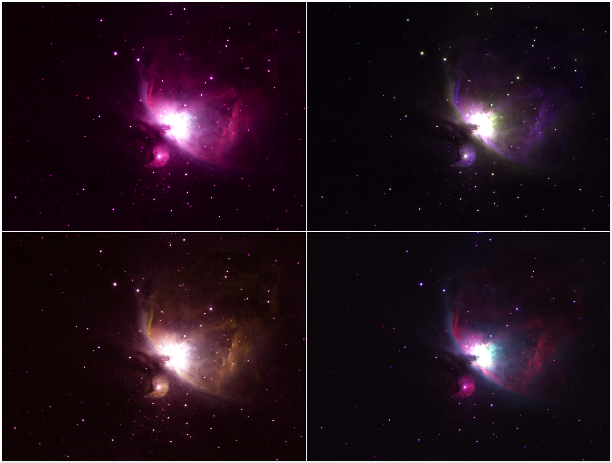
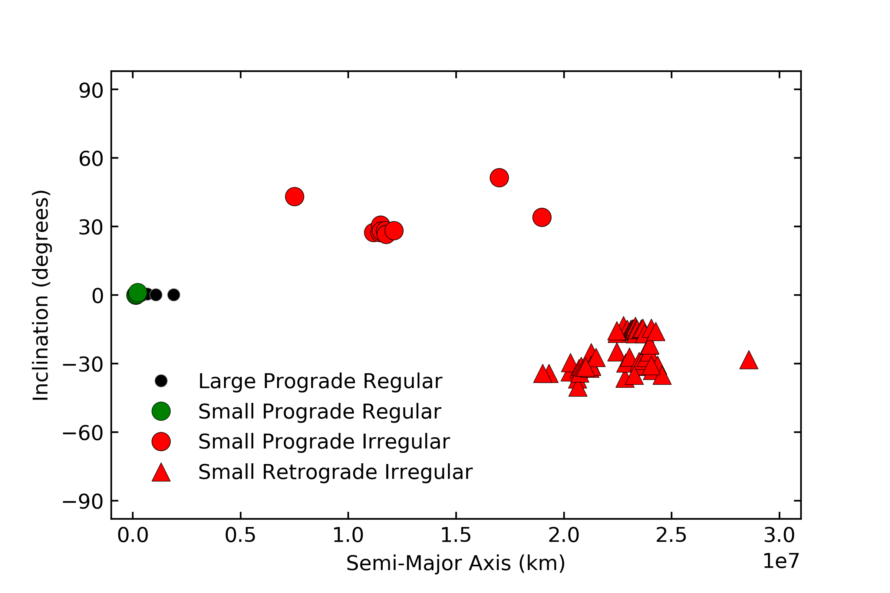
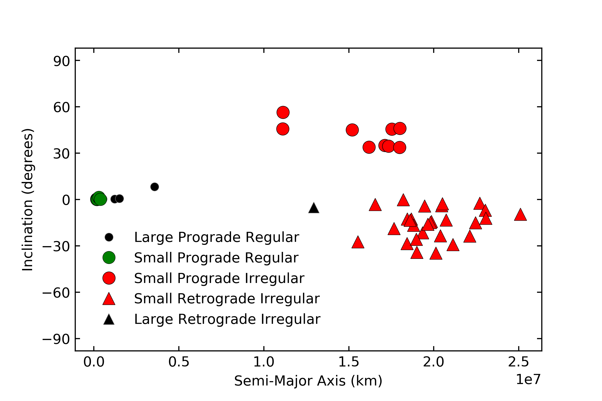

Associate Director of Outreach and Education Climate Change Communicator Department of Physics and Astronomy, Georgia State University Atlanta, GA acouperus1@gsu.edu
Hello! You have arrived at the website of Andrew Couperus, me! I am an observational astronomer and finished my PhD at Georgia State University in the summer of 2025. I recently spent a year teaching at Smith College in MA as a Visiting Assistant Professor in Astronomy, and I have since returned to Georgia State University in the summer of 2026 as the Department of Physics and Astronomy's Associate Director of Outreach and Education. In my new position at GSU I am leading several efforts, including: (1) taking over management and development of the Department's educational HyperPhysics website, (2) assisting the Department's numerous outreach efforts, including leading a collaboration between the Department, Pink STEM, and Georgia's Museum of Aviation, and (3) teaching introductory physics content, including taking over the Department's Physics of Music and Speech course. Separately, my research efforts have studied the stellar activity of nearby low-mass stars in the solar neighborhood, alongside Todd Henry and the REsearch Consortium On Nearby Stars (RECONS - www.recons.org). I love time series data, the variable Universe, and interdisciplinary approaches to science communication!
I also have a strong interest in the intersection of astronomy and climate change education and outreach. These might seem like disjointed topics, but there is actually significant overlap between the fields of astronomy and climate science. In fact, there are many reasons why astronomers in particular are very well positioned to teach and talk about climate change topics. Check out the Astronomers for Planet Earth (A4E) group here if you want to learn more. One of my main activities in this area in recent years has been serving on the American Astronomical Society (AAS) Task Force for Green Astronomy, a group charged with identifying ways for the AAS to reduce its emissions in line with the Paris Climate Agreement. A copy of our report to the AAS can be accessed on arXiv here. I have continued this work by serving as a member on the AAS Sustainability Committee over 2024-2025, and transitioned into chairing this committee as of mid-2025. Please reach out if you're curious to hear more - I'm always looking to make new connections in this interdisciplinary space!
I led two primary projects during my PhD thesis work, focusing on topics I continue to research. Both projects targeted low-mass M dwarfs, which account for roughly three-quarters of all stars in the local Universe. These tiny red stars are leading candidates for detecting and characterizing exoplanets in the habitable zone using modern techniques. However, the stars themselves can be quite unwieldy, hosting very strong magnetic activity that can produce massive eruptions and harmful high-energy radiation that could both prove disastrous for any potential life orbiting these stars. It is therefore critical to understand how and why these stars behave the way they do in the hopes of determining which may ultimately be good or bad candidates for hosting habitable worlds. My projects have examined different aspects of how this stellar activity behaves and changes in time.
The first project was an endeavor to investigate long-term stellar activity cycles in nearby M dwarfs using more than two decades of stellar brightness measurements obtained by RECONS. These data are collected regularly with ongoing observations as part of a long-term effort using the Small and Moderate Aperture Research Telescope System (SMARTS) 0.9m telescope at the Cerro Tololo Inter-American Observatory (CTIO) in Chile. The volume-complete sample used in this effort consists of roughly 450 M dwarfs within 16.7 parsecs in the southern sky, with a median coverage of approximately 10 years per star. My efforts have yielded one of the largest collections of stellar activity cycles in fully convective M dwarfs (N=50-ish), with corresponding cycle period measurements available in many cases (N=20-ish). The results have revealed cycles with extreme brightness changes of ~10–20%, others indicating periods beyond 30 years, and one in a 40-50 Myr-old pre-main-sequence star. Comparison with the volume-complete subset yields a cycle occurrence rate lower limit of ≥ 5.7% ± 1.0%, indicating at least one in twenty M dwarfs host such cycles. These results will be published in a forthcoming paper that is in preparation.
My second project has examined a sample of 36 M dwarf wide binaries with nearly identical components in each pair. These ‘twin’ binaries are comprised of stars with similar masses, ages, and compositions based on (a) astrometry confirming that they are part of the same, presumably coeval system, and (b) optical/infrared photometry from 0.5-2.2 µm that match within 0.1 mag. The project has assessed if these twin stars display similar or radically different activity behaviors, allowing us to inform and constrain how well we can predict the overall evolution of this activity across stellar lifetimes. The targets have been studied with a breadth of new observational programs, including short- and long-baseline optical photometry targeting rotation rates and stellar cycles respectively, optical spectroscopy studying H-alpha chromospheric activity and radial velocity behaviors, X-ray imaging to investigate X-ray coronal properties of the stars, and high-resolution speckle imaging to help rule out possible additional companions that might invalidate the assumed twin nature of the stars. The results indicate mismatches beyond 25% exist in activity and/or rotation rate for roughly one out of five twin pairs, alongside several remarkable cases showing near total mismatches, all despite the pairs' otherwise identical natures. On the flip side, many other systems appear remarkably consistent in their various measurements, despite the numerous factors that could potentially deviate rotation-activity evolution for a given star. Science has, as it often does, produced more questions than answers in this case! Two papers have been published from this work, Paper 1 and Paper 2, and the project is planned to continue under a recently-accepted Chandra X-ray Observatory proposal targeting X-ray activity measurements in an expanded subset of the twin systems.
A few example Figures are given below to highlight aspects of both projects. A complete discussion of both projects and the key results is available in my dissertation, which can be accessed here.

Figure 1 - A slightly outdated H-R diagram of the RECONS volume complete M dwarf sample within 17 parsecs, which spans the entire M dwarf spectral range and is comprised of color-coded subgroups that divide the different mass regimes. The number of objects in the sample totals 455 (as of plot creation). A black dashed line has been added at MV = 11.33, which roughly corresponds to the 0.35 solar mass transition between partially and fully convective stars, based on the mass-luminosity relation of Benedict et al. (2016). The sample is dominated by mid and late M dwarfs, which have been critically understudied to date in regards to stellar activity cycles.

Figure 2 - Example results for the prominent stellar cycle found in WT 460 AB, a nearby M dwarf system observed as part of RECONS efforts. The differential photometry light curve is shown, where 0 is defined as the mean of all the points. The grey number on the top right is the average noise of the calibrator reference stars, shown visually as the grey shaded region spanning above and below 0. The y-axis is inverted, so that the stellar brightness increases moving upward on the plot. Points are the average and standard deviation of the typically 5 frames taken in a single observational visit, with open circles representing low-quality visits that only acquired a single frame. Brightness variations spanning beyond two decades are plainly evident.

Figure 3 - An observational H-R diagram using Gaia DR3 absolute G magnitudes and BP-RP color. Large black circles represent the 36 systems in the twin M dwarf binary sample, with components in each binary connected by a red line. Under plotted in grey is a sample of Gaia sources showing the main sequence for comparison. A diagonal cyan line represents the gap marking the transition between partially and fully convective M dwarfs as discovered in Jao et al. (2018). The sample includes binaries spanning the range from partially convective early-type M dwarfs to mid and late M dwarfs that are fully convective. More details are available in Paper 2.

Figure 4 - Twin binaries from my thesis sample shown in the rotation–activity plane for M dwarfs, with lines connecting the two twin components in each binary. The H-alpha EW scale is linear between 0.3 and -0.3 and logarithmic beyond this range. The averaged CHIRON H-alpha EWs include only nonflaring epochs with both stars successfully observed back to back, and shaded bars show the ranges of observed EWs. Square symbols represent fully convective stars, triangles are partially convective, and diamonds specify the LP 368–99 AB system residing within the gap between these structural types. Comparison data for a large sample of field M dwarfs from Newton et al. 2017 are underplotted in blue, and these points use the same PC/FC symbol scheme based on their estimated masses relative to 0.35 Msol. The two significantly mismatched twin pairs are (1) NLTT 44989 AB, and (2) RTW 1123 +8009 AB. It is notable that all of the stars generally follow the rotation–activity relationship, even for NLTT 44989 AB, where the slower rotator is correspondingly less active. The single exception is RTW 1123+8009 AB, which has rotation period measurements that are less confident and possibly somewhat inaccurate, hence the arrows plotted on its points. More details are available in Paper 2.
Interests
Running, meditation, climate change, metal cover songs, cooking, fun facts, all things science and science communication.
Fantasy Novels - Favorites include: Stormlight Archive (and all of Brandon Sanderson), Kingkiller Chronicles, Monk and Robot series
PC Gaming - Favorites include: Elden Ring, Breath of the Wild, Skyrim, Stardew Valley
Fun Images and Plots

Four false-color composite images of the Orion Nebula, made using multi-filter images I acquired with the Reynolds Observatory at Clarkson University in Potsdam, NY.

The semi-major axis versus inclination for the known moons of Jupiter (Fall 2018). Made using data from the JPL Small-Body Database and Scott Sheppard at the Carnegie Institution for Science.

The semi-major axis versus inclination for the known moons of Saturn (Fall 2018). Made using data from the JPL Small-Body Database and Scott Sheppard at the Carnegie Institution for Science.